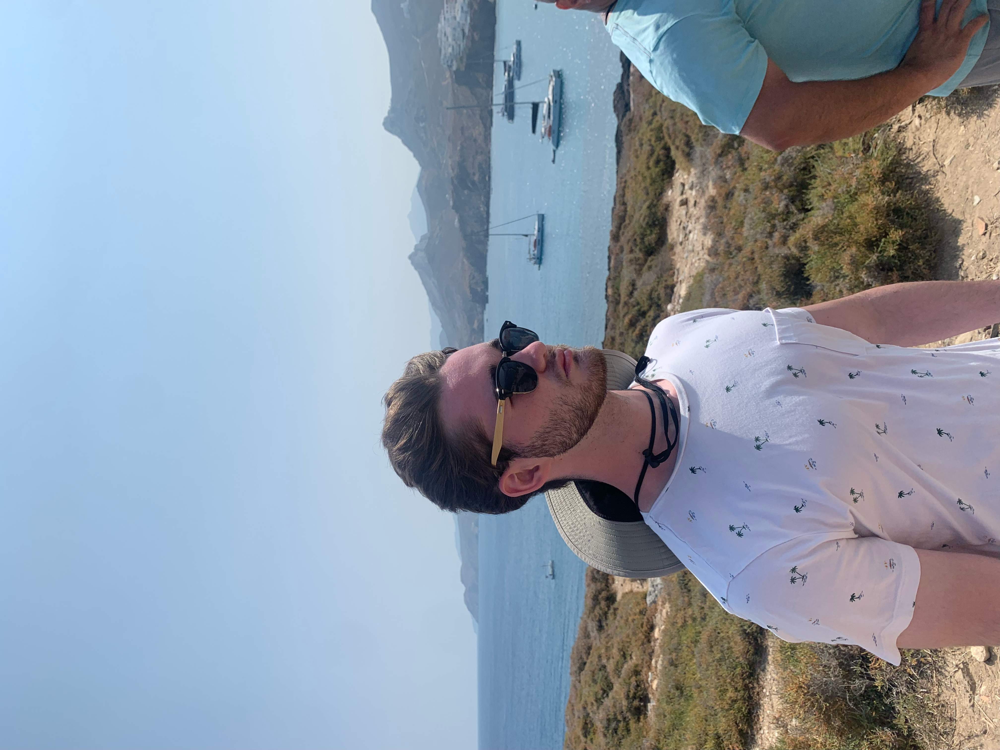

About the Author
My name is Chase Carlos and I am 22 years old. I'm currently attending Stockton University and pursuing a degree in Computer Sciences. I grew up in the Atlantic County region and I enjoy spending time traveling to get a taste of what life is like in other areas. When I'm not traveling or working I spend my time golfing, working out, watching sports, playing guitar, or just hanging with friends. I intend to graduate following the winter semester in 2025 and will pursue a career in cyber security following my graduation.
